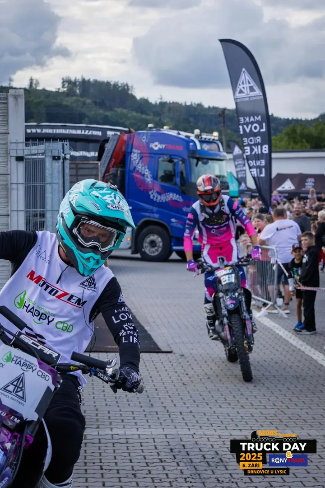
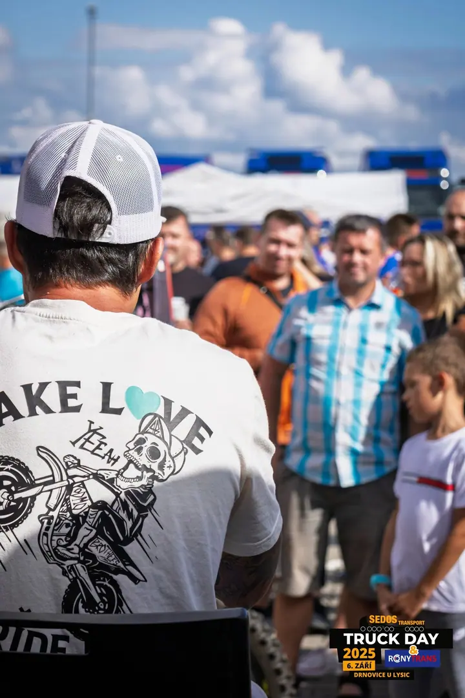
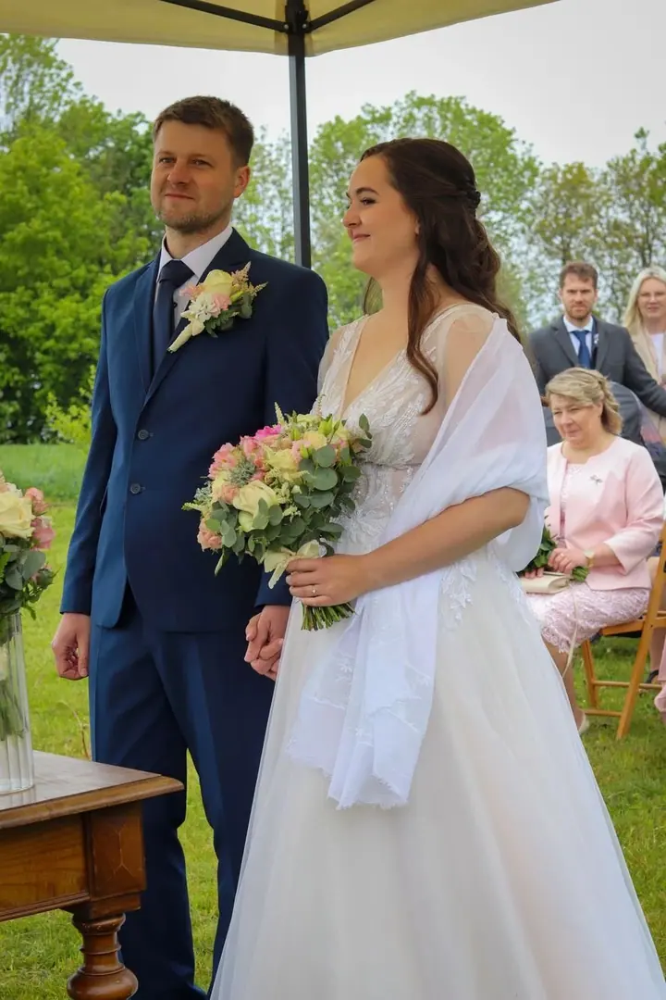
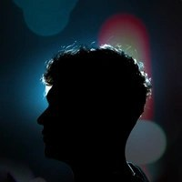

01 / 04
Focení eventů a akcí
Fotím firemní akce, koncerty, večírky, plesy i maturáky. Nejvíc mě baví akce, kde to opravdu žije a lidi se baví.
Zeptat se na termín→


Fotím akce, na které se nezapomíná
Zeptat se na termín →(01) Ahoj
Jmenuji se Zdeněk Kala a fotím firemní akce, koncerty, plesy, večírky i maturáky. Baví mě akce, kde to opravdu žije a lidi se baví. Pocházím z malé vesnice v okrese Blansko a fotím po celé České republice.
(02) Co fotím
01 / 04
Fotím firemní akce, koncerty, večírky, plesy i maturáky. Nejvíc mě baví akce, kde to opravdu žije a lidi se baví.
Zeptat se na termín→02 / 04
Nafotím obřad, novomanžele i hosty tak, aby fotky působily přirozeně. Celý den si můžete užít a focení nechat na mně.
Zeptat se na termín→03 / 04
Portréty pro firmy a podnikatele na web, sociální sítě i pro partnery. Fotky, které dávají smysl tomu, kdo si je objednal.
Zeptat se na termín→Dále nabízím
Fotky produktů pro e-shop, web a sociální sítě, na čistém pozadí nebo v aranžmá.
↗(04) Postup
Od první zprávy po hotovou galerii.
Krok 1 z 4
Ozvěte se mi telefonicky, formulářem nebo e-mailem a napište základní informace o akci. Ověřím dostupnost termínu, pošlu vám podrobnosti a společně doladíme rezervaci.
Krok 2 z 4
V den focení si projdeme průběh a pak už se o fotky postarám sám. Když je potřeba, lidi navedu, aby fotky působily přirozeně.
Krok 3 z 4
Po akci pečlivě vyberu nejlepší snímky a každý z nich profesionálně upravím.
Krok 4 z 4
Hotové fotografie dostanete v digitální podobě. Obvykle do 2 týdnů od focení, pokud se nedomluvíme jinak.

Vy řešte svoji akci, focení nechte na mně.
(05) Za objektivem
Fotit jsem začal ve druháku na střední škole a postupně se z koníčku stala moje práce. Dnes se focením živím naplno a jezdím za akcemi po celé republice. Za sebou mám přes 70 dokončených zakázek a klientům jsem předal víc než 30 000 fotografií.
Vím, že fotograf většinou není to hlavní, co při plánování akce řešíte. Přijedu, zjistím, co a jak, a dál už si focení řeším sám. Nemusíte mě celý večer vodit za ruku ani hlídat, jestli jsem vyfotil tohle nebo tamto. Když je potřeba lidi nahnat na společnou fotku, nahnám je. Když je lepší nepřekážet, nepřekážím.
Chci odevzdat fotky, které vypadají dobře a hlavně dávají smysl tomu, kdo si mě na akci objednal. Na web, na sociální sítě, pro partnery a zaměstnance, nebo prostě jako pořádný výstup z celé akce. Jsem časově flexibilní a rád se přizpůsobím i specifickým požadavkům.

Zdeněk
Zdeněk Kala · Eventový fotograf
Cena je vždy úměrná zakázce a záleží na vašich požadavcích, délce focení a počtu fotek. Napište mi a pošlu vám nabídku na míru.
Obvyklá doba zpracování je do 2 týdnů od focení, pokud si individuálně nedomluvíme jinak. Fotky předávám v digitální podobě.
Ano, fotím po celé České republice. Stačí napsat místo konání a domluvíme se.
Termín, místo a typ akce, přibližnou délku focení a kolik fotek zhruba očekáváte. Když si nejste jistí, rád poradím.
(07) Kontakt
Napište pár vět o tom, co si představujete, a termín, který se vám hodí.